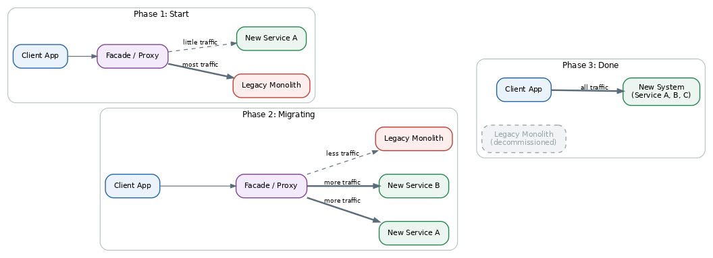
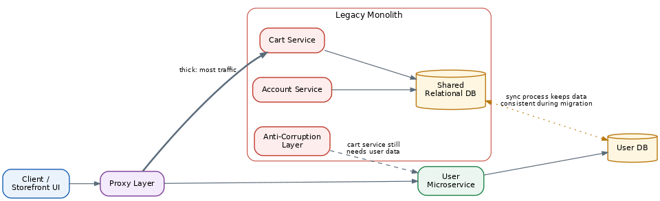

Strangler Fig Pattern
Table of Contents
Overview
The name comes from a real rainforest plant: a strangler fig starts as a small seed dropped in a crack of a large host tree, slowly grows around it sending down roots and reaching up for sunlight, and over years becomes strong enough to survive on its own — until the original tree underneath eventually rots away, leaving only the fig standing in its shape. Martin Fowler borrowed this image in the early 2000s to describe a way of replacing old software systems: instead of tearing down a legacy system and building a replacement from scratch in one risky move, you grow the new system gradually around the old one, piece by piece, until the legacy system is no longer needed and can be safely switched off. It's one of the most trusted ways to move a large, tangled monolith toward a microservices architecture, precisely because it doesn't ask a business to gamble everything on a single high-risk rewrite.
The Problem: Legacy Systems
A legacy system is simply an older piece of software a business still depends on heavily, even though it's difficult to maintain. These systems are rarely badly built on purpose — they're usually built with the best practices available at the time, then patched and extended for years as new business needs arise. Each patch makes sense on its own, but years of patches on top of patches make the whole system rigid, hard to understand, and risky to change. As dependence on the software grows, so does the cost of changing anything: a small tweak can accidentally break something else because everything inside is tightly coupled, developers become afraid to touch old code, the technology becomes outdated and hard to hire for, and every new feature takes longer than the last.
The obvious idea — "let's just build a new version that does the same thing, but better" — sounds simple but rarely works in practice. Rewriting a large system from scratch can take months or years, during which customers still expect new features and bug fixes on the old system, stretching the team thin. Worse, nobody fully remembers or has documented every rule the old system enforces, including strange historical edge cases, so trying to perfectly replicate all of that behavior wastes enormous effort. Consider a bank running its core account ledger on a decades-old system that every transaction ultimately touches: replacing it overnight is extremely risky (any mistake could mean lost transactions or wrong balances), yet keeping it forever isn't sustainable either, since it gets harder and costlier to maintain every year. This is exactly the situation the Strangler Fig pattern is designed to solve.
The Strangler Fig Solution
Instead of replacing the legacy system all at once, the Strangler Fig approach replaces it gradually, one small piece of functionality at a time. You build a small new service that handles just one feature, while the old system continues handling everything else; over time you build more services for more features, and each time a new piece is ready, you redirect that slice of traffic away from the old system into the new one.
The trick that makes this possible is a facade (or proxy): a layer sitting between client applications and the backend systems. This proxy inspects each incoming request and decides where it should go — the legacy system, or one of the new services — entirely behind the scenes, so the applications and people using the system never need to know a migration is even happening; they keep talking to the same front door the whole time.
This incremental approach has three major benefits: the business starts getting value almost immediately (as soon as the first small service is live, instead of waiting years for a "big bang" release); the risk of any single change is much lower, since it's far easier to detect and roll back a small piece than to unwind an entire rewrite; and teams learn as they go, with each migrated piece teaching the organization more about the old system's real behavior and how to do the next piece even better. It's worth being honest that this doesn't make modernization easy — it still requires real engineering discipline to safely split apart a tangled system — but it makes the investment and the returns visible and gradual, rather than staking everything on one enormous, high-risk event.
The Architecture
At a high level, the Strangler Fig architecture has four building blocks: the client applications making requests, the facade/proxy that receives every request, the legacy system that still owns not-yet-migrated features, and the new system — usually a set of microservices — that owns already-migrated features.
The migration typically moves through four phases. In phase one, the facade is introduced in front of the legacy system for the first time, acting as a transparent pass-through that forwards almost all traffic straight to the legacy system unchanged. In phase two, as new services are built one at a time, the facade routes an increasing share of requests to those new services based on which feature or URL path the request targets. In phase three, once every feature has migrated and nothing depends on the legacy system anymore, it can be safely decommissioned and the facade routes 100% of requests to the new system. In phase four, some teams remove the facade entirely and let clients talk directly to the new system, while others keep a lightweight version around as a stable adapter for older clients.

One more architectural piece appears whenever the legacy system and new services need to talk to each other during the transition, which is almost always the case: the anti-corruption layer. Think of it as a translator — when an old part of the legacy system needs to call a feature that's already moved into a new microservice, the anti-corruption layer converts the old-style call into whatever format the new microservice expects, and translates the response back. This keeps the new services clean and well-designed instead of forcing them to understand the old system's outdated conventions.
Detailed Example: Migrating an Online Store
Consider an online store built as one large monolithic application, bundling three logical pieces of functionality: a User service (customer accounts), a Cart service (shopping carts, depending on user data), and an Account service (order history and settings) — all sharing a single large relational database.
The migration begins by placing a proxy layer in front of the storefront's UI and the monolith. At first, this proxy simply forwards every request straight to the monolith, changing nothing about how the system behaves — valuable on its own, since it gives the team a safe place to redirect traffic later without touching the monolith's code yet. Next, the team decides new features will be built as separate microservices going forward, while existing bugs in the monolith are still fixed as needed. The proxy is updated so requests matching the User service's endpoints go to a brand-new User microservice with its own dedicated database, while everything else still goes to the monolith. Because the Cart service inside the monolith still needs user information that no longer lives there, an anti-corruption layer is introduced inside the monolith to translate the Cart service's old-style calls into calls the new User microservice understands.

Because both the legacy monolith and the new User microservice may need access to user data during this in-between period, the team adds a synchronization mechanism: whenever the User microservice's database changes, an event flows through a queue, and a small synchronizing agent applies that same change to the monolith's database, keeping both copies close to consistent until cutover completes. This same playbook — migrate one service, add an anti-corruption layer where needed, sync data if required — is repeated for the Cart service, then the Account service. Each time a service fully migrates out, its access through the anti-corruption layer is removed, since the caller now talks to the new service directly. Once all three services live outside the monolith, the shared database and old monolith code are retired, and eventually the proxy layer itself can be simplified or removed.
Key Insights and Implications
Successfully splitting a system requires understanding where the natural seams are — the places where one piece of business logic can be cleanly separated from another. Techniques like domain-driven design help teams find sensible boundaries so each extracted service represents a coherent, independent piece of the business rather than an arbitrary slice of code. This pattern also generally assumes access to modify the legacy system's source code, since small hooks are often needed to redirect internal calls to new services; if a team can't change the old system at all (e.g. an unsupported, closed third-party product), other modernization approaches are needed instead.
Modernization through this pattern isn't purely a technical exercise. Legacy systems often become tangled specifically because of how the teams around them were organized and made decisions, so simply rebuilding the same software with a new team using old habits tends to recreate similar problems over time — lasting success usually requires rethinking how teams are structured and collaborate, not just which programming language they use. Finally, it helps to think of the proxy, anti-corruption layers, and data synchronization mechanisms as temporary scaffolding rather than permanent fixtures: the healthiest migrations plan from day one to eventually remove this scaffolding once the legacy system is fully retired.